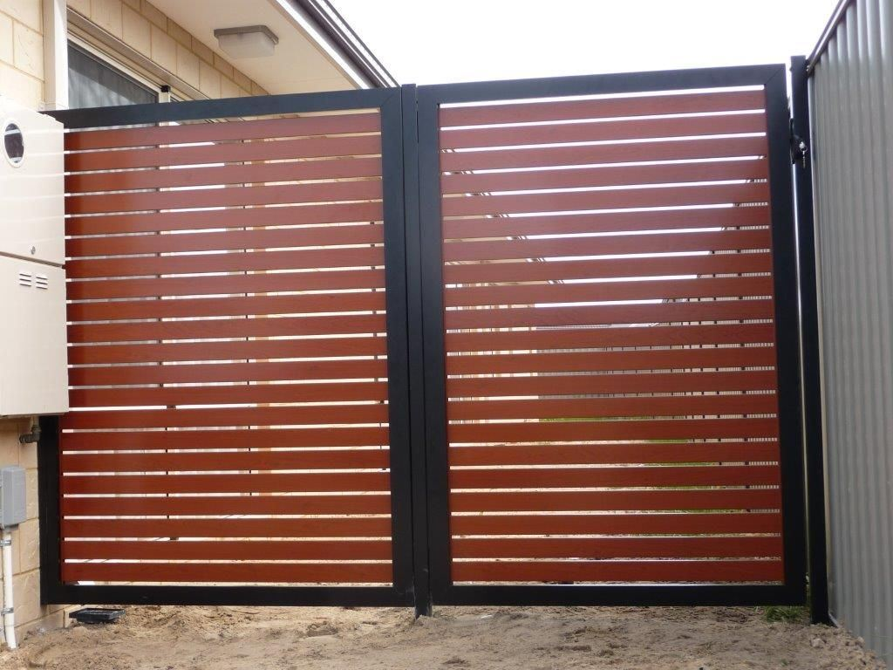

Home / Gallery
GalleryA fencing company you can rely on in Perth
We don’t just provide great fencing throughout Perth, we take pride in every job we do.
Our expert workmanship means you will get the fencing you want, first time, every time. Throughout our history we have put a strong emphasis on customer service and satisfaction, so why not call us today for a quote?
Free measure & quote
Talk to one of our friendly fencing experts about batten gates, batten fencing, Colorbond gates, pool fencing or repairs.